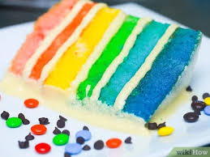

Rainbow Sheet Cake

Description
The base of this rainbow sheet cake is a super simple vanilla cake that is topped with cream cheese frosting. You can use any vanilla cake recipe here (or even box mix if you really wanted) – just make sure the batter isn't too runny or the colors may bleed into each other.
Feel free to adjust the color palette to your preference! Perfect for a kid's birthday party, or a fun weekend activity to bake with kids.
Ingredients
Cake:
- baking spray with flour
- 1 cup unsalted butter, softened
- 1 1/2 cups white sugar
- 3 large eggs, at room temperature
- 2 teaspoons vanilla extract
- 3 cups enriched bleached cake flour
- 1 tablespoon baking powder
- 1/2 teaspoon kosher salt
- 1 cup whole milk, at room temperature
- Gel food coloring: red or pink, orange, yellow, green, blue, and purple
Frosting:
- 1 (8 ounce) package cream cheese, softened
- 1/2 cup unsalted butter, softened
- 3 cups powdered sugar, sifted
- 1 teaspoon vanilla extract
- 1/8 teaspoon kosher salt
- Gel food coloring: red or pink, orange, and green
Steps
- Gather all ingredients.
- Preheat the oven to 350 degrees F (175 degrees C).
Grease a 9x13-inch baking pan with baking spray and line with parchment paper; spray parchment with baking spray.
- Prepare Cake: Beat butter in a stand mixer fitted with a paddle attachment on medium speed until creamy, about 30 seconds.
Gradually add white sugar; beat until light and fluffy, 2 to 3 minutes.
- Add eggs, 1 at a time, and beat just until incorporated after each addition, about 1 minute total. Add vanilla and beat until combined, about 15 seconds.
Scrape down sides and bottom of bowl using a flexible spatula.
- Whisk together flour, baking powder, and salt in a medium bowl until combined.
- Add flour mixture to butter mixture alternately with milk, beginning and ending with flour mixture, beating on low speed just until combined after each addition.
- Divide batter equally between 6 small bowls. Add one to two drops of food coloring to each bowl, tinting one bowl red or pink, one orange, one yellow, one green, one blue and one purple.
Mix gently to combine and add additional coloring as needed to reach desired shades.
- Dollop the batter into the prepared pan, alternating colors, until the whole pan is filled. [If you have leftover batter, top up existing dollops of the same color and don't make a second layer of different colors].
Gently bang the pan on the counter to ensure that the batter is evenly distributed and that all gaps are filled.
- Bake in the preheated oven until a toothpick inserted in the center comes out clean, about 30 minutes.
Cool in pan for 15 minutes. Remove cake from pan and cool on a wire rack until completely cool, at least 1 hour.
- Prepare frosting: Beat cream cheese and butter in a stand mixer fitted with a paddle attachment on medium speed until smooth, about 1 minute.
Reduce mixer speed to low, and gradually add powdered sugar, beating until incorporated, about 2 minutes.
Add vanilla and salt, then increase mixer speed to medium, and beat until fluffy, about 1 minute.
- Spoon out 1/4 cup of frosting into each of 3 small bowls. Add one to two drops of food coloring to each bowl, tinting one bowl red or pink, one orange, and one green. Mix well to combine and add additional coloring as needed to reach desired shades.
Transfer each of the colored frostings to piping bags fitted with small round writing tips. Leave the remaining frosting in the mixing bowl white.
- Using a serrated knife, trim the edges of the cake.
- Frost the top of the cake with the white frosting, leaving the sides uncovered.
- Use the colored frosting to pipe small rainbows across top of cake.